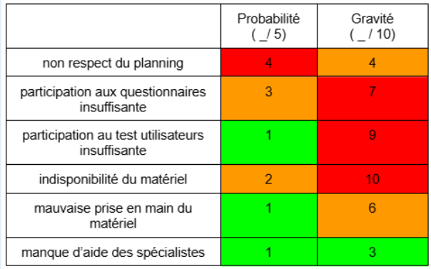
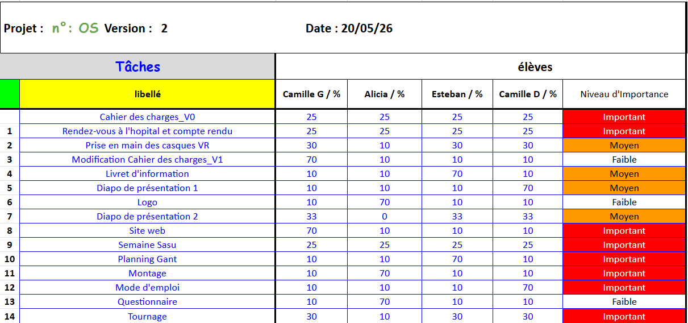
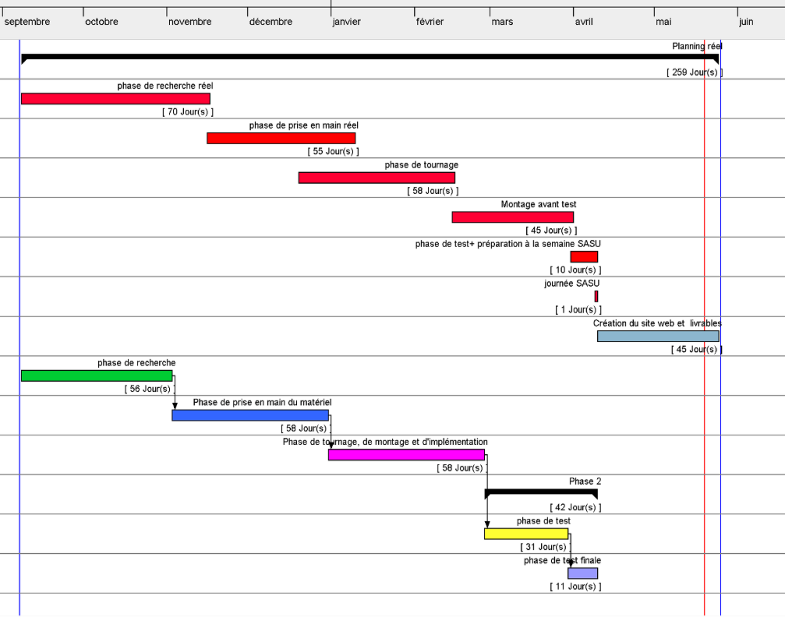

Ce projet est d'une durée d'un an, avec deux échéances (une présentation par semestre).
Durant le premier semestre, nous avons dû créer notre cahier des charges et faire des recherches afin
d'approfondir nos connaissances sur le sujet. C'est durant le premier semestre que nous avons rencontré les
experts qui
ont accepté de nous suivre durant notre projet.
Le second semestre était consacré à la réalisation de notre vidéo avec comme objectif de pouvoir
sensibiliser les
étudiants durant le semaine Handisim (première semaine de mars). Suite à cette semaine, nous avons pu
analyser les résultats afin de les présenter lors de notre soutenance finale du 22 mai 2026.
Pour cela, il nous a fallu être organisés. Nous avons donc fait plusieurs types de réunions :
Entre les différentes réunions, nous avons choisi de communiquer par WhatsApp pour les messages, par Gmail pour échanger avec notre tutrice et enfin avec un Drive pour partager toutes nos recherches et données collectées.
Durant ce projet, nous avons pu acquérir de nombreuses compétences :
Pour structurer et gérer notre projet, nous avons utilisé plusieurs outils :
Une matrice des risques

Une matrice d'implication

Un planning Gantt
